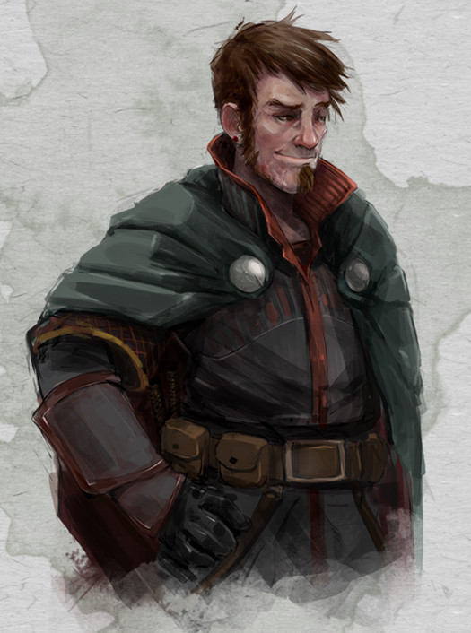

Roublard humain niv 1

Aloïs Makarian
Roublard 1 (0 PX)
Humain (h), loyal mauvais
Criminel (tueur à gages)
[ CARACTÉRISTIQUES ]
For 14 (+2) Dex 16 (+3) Con 12 (+1)
Int 14 (+2) Sag 11 (+0) Cha 12 (+1)
[ MAÎTRISES ]
Bonus de maîtrise +2
Sauvegardes Dex +5, Int +4
Compétences Acrobaties +7, Athlétisme +4, Discrétion +5, Escamotage +5, Perception +2, Tromperie +3 (Perception passive 12)
Armes armes courantes, arbalète de poing, épée courte, épée longue, rapière, arc court
Armures armures légères
Outils outils de voleur, jeu de cartes, matériel d'alchimiste
Langues commun, gnome, jargon des voleurs
[ COMBAT ]
pv 9 ; DV 1d8
Init +3 ; Vitesse 9 m
CA 14 (armure de cuir 11, Dex +3)
Épée courte. Corps à corps : +5 (1d6+3 perforant ; finesse, léger)
Dague. Corps à corps : +5 (1d4+3 perforant ; finesse, légère, lancer (portée 6 m/18 m))
[ CAPACITÉS & TRAITS ]
Expertise * (Acrobaties, Outils de voleur)
Attaque sournoise (1/tour si AV à l'attaque ou allié au contact avec une arme de finesse ou à distance) (+1d6)
Contact avec le crime
[ ÉQUIPEMENT ]
Épée courte (2), dague (2), armure de cuir, outils de voleur, sac à dos, pied-de-biche, marteau, piton (10), torche (10), boite d'allume-feu, rations/1 jour (10), gourde, corde en chanvre de 15 m, vêtements communs, bourse
Coût de l'équipement 86.8 po ; Poids de l'équipement 40 kg
15 po
Poids des pièces 0.15 kg
[ PERSONNAGE ]
Taille M / 1,75 m / 70 kg ; Âge 19 ans
Yeux marrons ; Peau blanche ; Cheveux bruns
Apparence du personnage Aloïs est un humain de taille moyenne, à la carrure plutôt légère, qui cache sous ses vêtements toujours bien choisis une musculature fine et bien dessinée, lui permettant de faire presque ce qu'il veut de son corps souple et affûté. Tel un chat indolent, il aime à donner de lui-même une apparence nonchalante, et se laisse volontiers aller à une certaine paresse lorsqu'aucun enjeu n'en vaut véritablement la peine. Cependant, quand son intérêt finit par être éveillé, il devient vite impatient et ne peut plus dissimuler qu'avec peine son envie d'agir. Sa vraie personnalité se révèle alors, bouillonnante, impulsive, intrépide et trompe-la-mort. Rigolard et bon vivant, ses yeux pétillent souvent de malice et il a toujours un petit sourire en coin dont on ne sait s'il est narquois ou bienveillant. Bien qu'il s'en défende, il aime attirer les regards et prend soin de son apparence, affichant une certaine désinvolture calculée dans ses gestes comme dans sa mise en pli, et se la joue rapidement séducteur dès qu'une (belle) occasion se présente. Mais il ne faut pas se fier à son apparente gentillesse, car s'il est loyal envers ceux qui ont gagné son respect, il sait trancher le fil de la vie de quiconque se met en travers de sa route, et cela sans aucun état d’âme. Il affirme toujours qu' « un contrat est un contrat, et je finis toujours ce que j’ai commencé ». Farfouillant souvent les poils de sa barbiche fournie, il ne tient jamais ses mains gantées trop loin de sa ceinture à pochettes, dans laquelle se trouvent les éléments essentiels à son activité de gentleman cambrioleur.
Trait La meilleure façon de me faire faire quelque chose est de me dire de ne pas le faire.
Idéal Je ne vole pas les autres dans une négociation.
Lien Je suis en train de payer une vieille dette que je dois à un généreux bienfaiteur.
Défaut Lorsque je suis confronté à un choix entre l'argent et mes amis, je choisis généralement l'argent. Et j'essaie de faire amende honorable après coup...
Passé du personnage Aloïs n’a jamais voulu être un mauvais garçon. Comme il le dit lui-même aujourd'hui à ceux qu’il s’apprête à passer de vie à trépas, ça lui est tombé dessus sans crier gare, comme la vérole sur le bas clergé. À douze ans, il découvre qu’il ne sait hélas pas résister aux paris stupides, surtout quand ils lui permettent de briller auprès de ses amis. C’est ainsi qu’il commet son premier larcin en dérobant au nez et à la barbe des prêtres une statuette sacrée lors d’une procession en l’honneur des semailles. Galvanisé par ce succès et l’enthousiasme de ses amis, il met vite à profit ses talents nouvellement découverts pour enchaîner les vols, grisé par le plaisir d’ajouter de nouvelles trouvailles à son tableau de chasse. Jusqu'à attirer l’attention des professionnels du métier, qui voient vite en lui une recrue providentielle pour assurer des missions nécessitant autant d’adresse que de culot, voire d’inconscience. Et le voilà enrôlé comme un moussaillon dans une galère, dont il ne sortira jamais vraiment. Car les choses finissent par s’aggraver… Enfin, pas tellement pour lui, mais surtout pour les autres, ceux qu’il doit délester de leurs richesses. Car Aloïs finit évidemment par découvrir qu’on est plus à l’aise pour détrousser un cadavre qui ne bouge pas, qu’un bourgeois qui crie et qui gesticule. Et en plus, il aime ça. Ce sentiment de pouvoir, consistant à tenir la vie des gens entre ses dagues, le pousse de plus en plus sur la voie du crime. Et enfin, lorsqu'il découvre qu’un contrat pour la vie d’un homme (jamais de femme ni d’enfant) vaut plus que n’importe quel larcin jusque là commis, son choix est fait : il pourra désormais ôter la vie de n’importe qui, pourvu qu’on y mettre le juste prix. Un contrat est un contrat, et Aloïs termine toujours ce pour quoi on le paie. C’est cette honnêteté qui le poussera pour la première fois à commettre une erreur en acceptant de supprimer le fiancé d’une riche héritière ne souhaitant pas s’engager dans un mariage arrangé avec un jeune seigneur cruel et imbu de lui-même. Il finira par tomber dans un piège tendu par le promis, et croupira dans des geôles infâmes, attendant d’être pendu, jusqu'à ce que la riche jeune femme le sorte de là grâce à une bourse bien garnie et judicieusement dépensée. Reconnaissant envers sa bienfaitrice, Aloïs s’est juré de payer sa dette envers elle, dès qu’elle le lui demandera, ce qu’elle vient justement de faire.
[ ÉVOLUTION ]
Les suggestions ci-après sont en lien avec le passé d'Aloïs.
Au niveau 2, ajoutez la capacité Ruse (ses pv passent à 15 et ses DV à 2d8).
Au niveau 3, choisissez l'archétype Assassin et ajoutez les capacités Maîtrises supplémentaires et Assassinat (ses pv passent à 21, ses DV à 3d8 et son attaque sournoise à 2d6).
Stat et histoire de Mellyrne